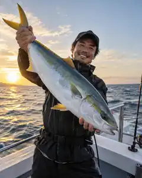
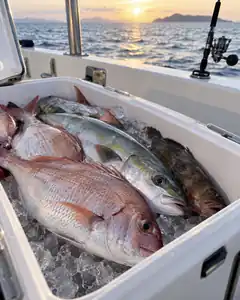

AZUMAMARU / FISHING REPORTS
釣果情報。
海で出会った一尾を、記録に。
本ページはデモ公開中。実釣果の自動掲載は準備中です。
LATEST CATCH
最新の釣果。
釣果を確認しています。
ARCHIVE
過去の釣果。
実際に公開された釣果だけを掲載します。サンプル画像は集計・実績に含めません。
VISUAL CONCEPT
掲載イメージ。
以下の2枚は制作デモ用のイメージ画像です。東丸で釣れた魚を表すものではありません。

